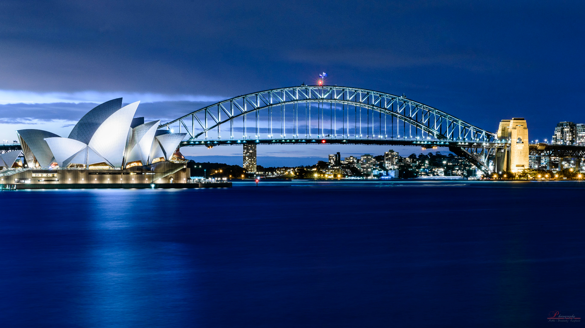
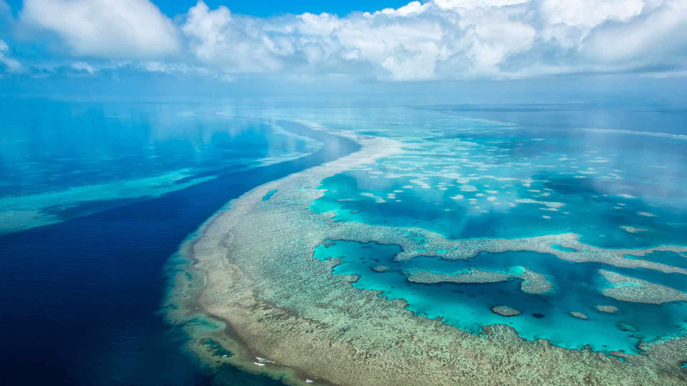
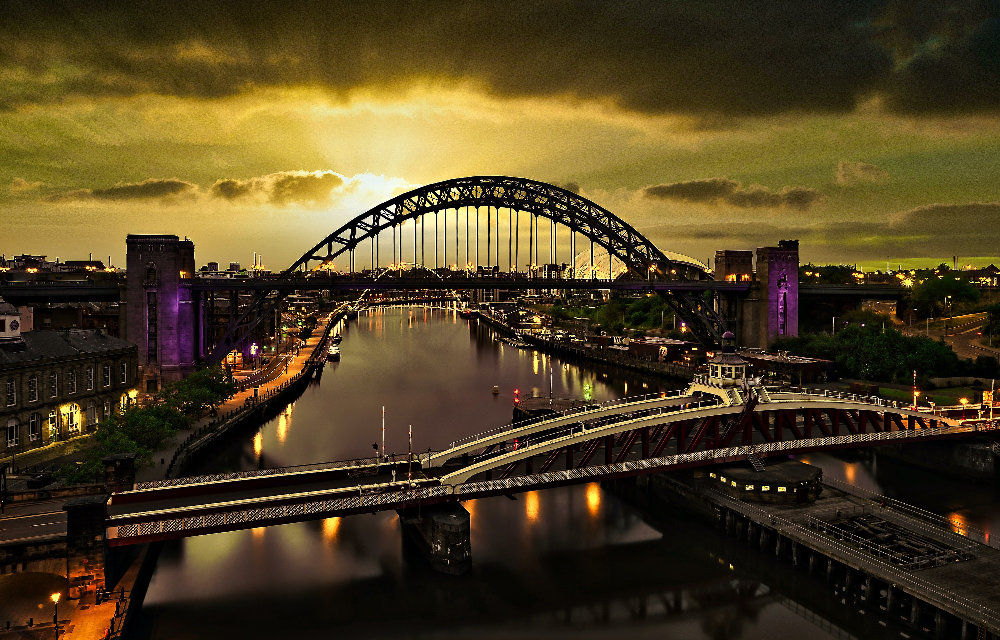
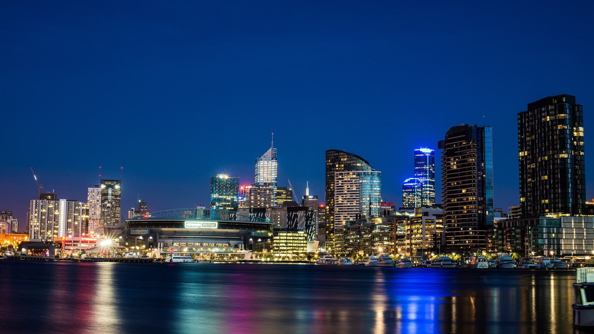
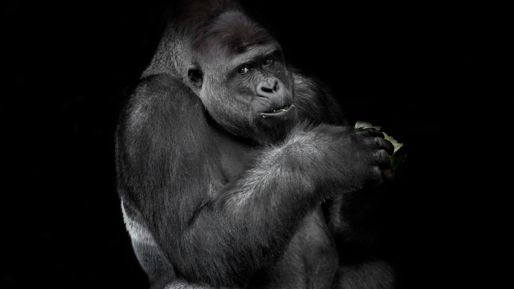

Top places to visit
1)Sydney Opera House, New South Wales
Mention "Sydney, Australia" and most people think of the Opera House. Shaped like huge shells or billowing sails, this famous building on Sydney's Bennelong Point graces the list of UNESCO World Heritage Sites and is one of the world's great architectural icons.
The location is stunning. Water surrounds the structure on three sides, and the Royal Botanic Gardens border it to the south. Danish architect, Jørn Utzon won an international competition for its design but withdrew from the project after technical and financing problems. Construction was finally completed in 1973 at a cost 10 times the original budget. By this time, Utzon had left the country, never returning to see his magnificent creation.
2)Great Barrier Reef Marine Park, Queensland
You can't leave Australia without seeing the Great Barrier Reef. This World Heritage-listed natural wonder is one of the largest living structures on the planet. It's so vast, you can see it from outer space. For divers, snorkelers, island aficionados, and nature lovers, it's a bucket list destination.
In 1975, the Great Barrier Reef Marine Park was established to protect its fragile ecosystems. These include more than 3,000 coral reefs; 600 continental islands, including the beautiful Whitsunday group; 300 coral cays; and inshore mangrove islands. One of the seven wonders of the natural world, the park stretches for 2,300 kilometers along the state of Queensland, on Australia's east coast (that's about the distance between Mexico and Vancouver). Not surprisingly, the Great Barrier Reef is one of the best places to visit in Australia for diving and snorkeling.
3)Sydney Harbour Bridge, New South Wales
Along with the Opera House, the Sydney Harbour Bridge is one of Australia's top architectural icons. Affectionately called "the Coathanger," this impressive feat of construction is the largest steel arch bridge in the world. It was completed in 1932, 40 years before the Sydney Opera House.
One of the top things to do in Sydney is a guided ascent to the top of the bridge, where you can enjoy spectacular views over the harbor and city. Rising 134 meters above the harbor, the bridge spans 500 meters, connecting Sydney's North Shore to the central business district. In addition to the pedestrian path, two railway lines extend over the bridge, as well as eight lanes for road traffic, and the direction of each lane can be switched to accommodate traffic flow. For an overview on the bridge's history and construction visit the museum in the southeastern pier. Fun fact: Paul Hogan, of Crocodile Dundee fame, worked as a painter on the bridge before rocketing to international stardom.
4)Melbourne's Culture, Victoria
Melbourne, Australia's second largest city, is a popular stop on many Australian itineraries – especially for culture vultures. Galleries, theaters, restaurants, shops, and its distinctly European feel are the main draws of this sophisticated city on the Yarra River. It's also a green city, with parks, gardens, and open spaces occupying almost a third of its total area. The cultural highlights of Melbourne are many. Gape at the masterpieces at the National Gallery of Victoria, watch a performance at Arts Centre Melbourne, or head to Federation Square. Here, you can browse Australian artworks at the Ian Potter Gallery and learn about the nation's screen culture at the Australian Centre for the Moving Image (ACMI). Feel like getting back to nature? Follow the Aboriginal Heritage Walk at the Royal Botanic Gardens. And if sports culture is top of your agenda, catch a game at the Melbourne Cricket Ground. In summer, cricket is the sport of choice; in winter, it's Australian Rules football. Melbourne is also rich in history. You can see it in the Grand Victorian buildings funded by the Gold Rush, and you can feel it as you shop in the elegant arcades and the Queen Victoria Market, which has been selling goods to Melburnians for more than a century
5)Blue Mountains National Park, New South

A UNESCO World Heritage Site, beautiful Blue Mountains National Park is a hiker's paradise and a popular day trip from Sydney. It lies an easy 81-kilometer drive west of the city.
Named for the blue haze emanating from the many eucalyptus trees, this stunning park protects more than 664,000 acres of wilderness. On a visit here, you can explore dramatic gorges, waterfalls, Aboriginal rock paintings, and 140 kilometers of hiking trails.
The most famous attractions in Blue Mountains National Park are the towering sandstone rock formations called the Three Sisters. Other highlights include the Katoomba Scenic Railway, the world's steepest, which whisks passengers down the Jamison Valley through a cliff-side tunnel into an ancient rainforest; and the Skyway, Scenic Cableway, and Scenic Walkway, which all offer elevated views of the dense forests. Hiking, abseiling, rock climbing, mountain biking, and horseback riding are all popular things to do in the park.
6)Taronga Zoo Sydney,New South Wales
Australia Zoo - The Ultimate Wildlife Adventure Located an hour north of Brisbane on Queensland's Sunshine Coast, Australia Zoo has a team of passionate conservationists working around-the-clock to deliver animal experiences like no other. Steve and Terri Irwin's vision has always been to make Australia Zoo the biggest and best wildlife conservation facility in the world. There is no zoo like Australia Zoo!
Conservation is At The Heart of Everything We Do at Australia Zoo When you visit Australia Zoo, you are making a difference to the conservation of wildlife. Every dollar you spend supports conservation projects around the world. Our conservation projects are helping to protect species from tigers in Sumatra and cheetah in Africa, to saltwater crocodiles and koalas in Australia. The ultimate mission of Australia Zoo is to save one, save the species.